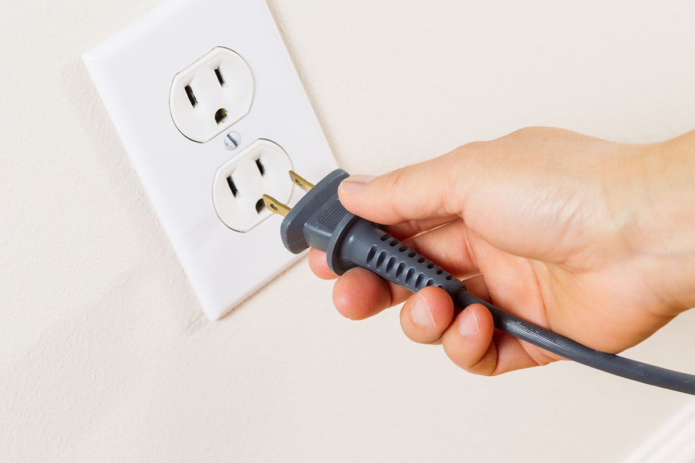
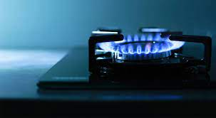
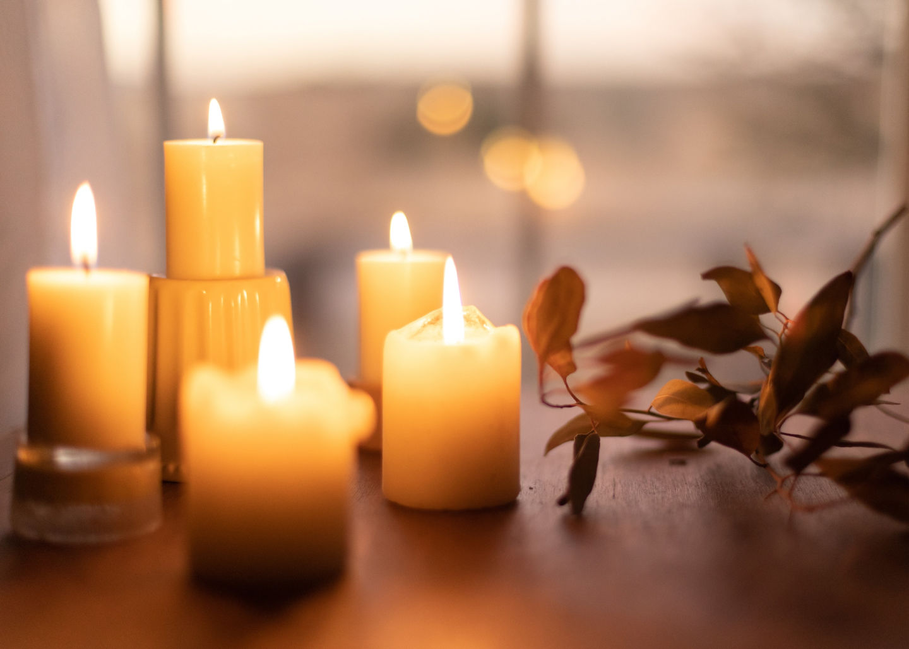
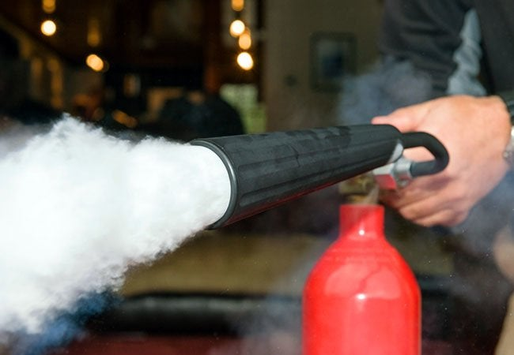

5 WAYS TO PREVENT FIRE |
|  |
Remove Plug if not in use - They can cause a fire risk if they're left plugged in and switched on. 12% of fires at home between 2013 and 2014 were started by electrical equipment. And in the same period, 85% of fatal fires at home were started accidentally, so it makes sense to always be limiting our risks. |
|  |
Don't leave fire unintended - Stay in the kitchen while you're frying, grilling, boiling or broiling food. If you have to leave the room—even for just a moment—turn off the stove. Keep your cooking area free of combustible materials. Keep anything that can catch fire, such as food packaging, oven mitts and towels, away from your stovetop. |
|  |
Blow out candles if not in use - Don't forget to blow out candles when you leave the room or go to bed. Candles may be pretty to look at but they are a cause of home fires — and home fire deaths. Remember, a candle is an open flame, which means that it can easily ignite anything that can burn. |
|  |
Learn how to use a Fire Extinguisher - Fire extinguishers apply an agent that will cool burning heat, smother fuel or remove oxygen so the fire cannot continue to burn. A portable fire extinguisher can quickly control a small fire if applied by an individual properly trained |
 |
Know your Fire exits - It provides a protected pathway out of the building. Exits, such as stairwells, must be protected from other parts of the building by fire-resistant materials. These materials must have a one-hour fire-resistance rating if the exit connects three or fewer floors in a building. |